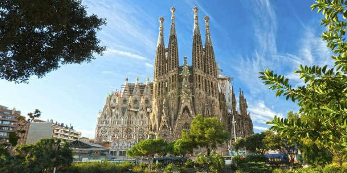
Sagrada Familia - Barcelona
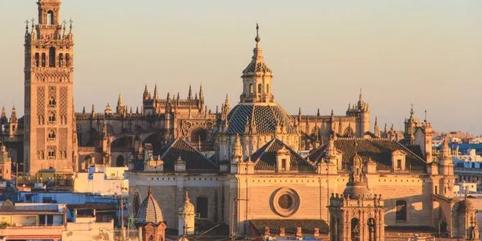
Catedral de Sevilla - Sevilla
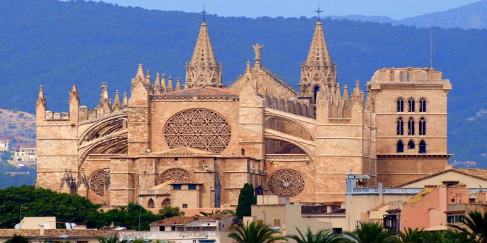
Catredal de Mallorca - Palma de Mallorca
Previous
Next
Ciudades
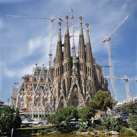
Barcelona
La capital de Cataluña, es la ciudad más visitada de España y la segunda más poblada.
Barcelona es tambien una de las ciudades europeas más cosmopolitas y todo un símbolo cultural,
financiero, comercial y turístico. Para muchos, Barcelona es la ciudad más atractiva de España
y una de las más bonitas.
Si aun no has visitado Barcelona, ¿a que esperas para conocer las maravillosas obras de Gaudi?
La Sagrada Familia y el parque Güell son una de sus obras más visitadas.
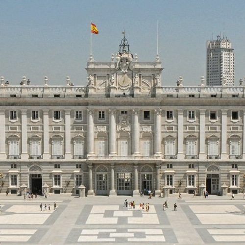
Madrid
La capital de España es la ciudad más poblada del país y esta situada entre las diez ciudades
más pobladas de Europa. A la belleza de Madrid, se une su increible oferta cultural con multitud de
representaciones teatrales, espectáculos y varios de los museos más importantes del mundo entre los que
destacan el Museo del Prado, el Museo Reina Sofia y el Museo Thyssen.
Madrid está repleta de edificios arquitectónicos y modernistas, parques, palacios y museos, la capital
es una ciudad para perderse en su belleza de dia y de noche.
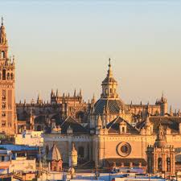
Sevilla
Sevilla, la capital de Andalucia, una de las mejores ciudades que visitar en España. De un lado y al otro
del rio Guadalquivir, rio que atraviesa la ciudad, nos encontramos con color, arte, música y mucha historia.
A un lado del rio nos encontramos con el casco antiguo, uno de los más grandes de Europa, que cuenta entre
sus monumentos más importantes a la Catedral de Sevilla y su torre campanario conocida como la Giralda,
el Real Alcázar y el Archivo de Indias, todos ellos Patrimonio de la Humanidad.
No te faltarán razones para pasar unos días en Sevilla.
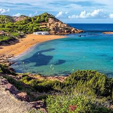
Palma de Mallorca
Cuenta con una ciudad moderna y vibrante, llena de historia, cultura, diversión y con una gastronomía de primer nivel.
La variedad de playas es enorme; encontrarás calas de roca típicas del Mediterráneo así como enormes playas de
arena blanca y agua turquesa cristalina que no tienen nada que envidar a las del caribe. Pero esto no es todo,
la Sierra de Tramontana que recorre toda la costa noroeste, dota a Mallorca de un paisaje sobrecogedor en el
que pequeños pueblos construidos enteramente con marés completan la escenografía de una isla de ensueño.
Tenerife
La isla de mayor tamaño del archipiélago canario y la más poblada de España, es también la que alberga el pico más
alto del país: el Teide (3.718 m).
Y por si esto no fuera suficiente, Tenerife es un destino idóneo para el avistamiento de ballenas ya que se pueden
observar hasta 26 especies de cetáceos que incluyen: delfines, orcas e incluso ballenas azules. La UNESCO ha sabido
reconocer la grandeza de la isla otorgando la categoría de Patrimonio de la Humanidad al casco histórico de La Laguna,
de estilo colonial, así como al Parque Nacional del Teide.
Monumentos importantes
Además de mostraros estas cinco ciudades españolas, las cuales son las más visitadas por los turistas, hemos hecho un pequeño
homenaje a monumentos importantes que deberias tener en cuenta en tus viajes por el mundo.
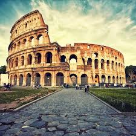
Coliseo Romano
Una maravilla arquitectonica del mundo moderno, a pesar de haber sido usada para diferentes fines a partir de la Edad Media, su
estructura majestuosa no ha podido ser despojada. A pesar de que su estado de conservación no es precisamente excelente, sus restos
nos permiten soñar e imaginar cómo debió ser en su máximo esplendor.
El anfiteatro, declarado Patrimonio de la Humanidad por la Unesco, era escenario de grandes acontecimientos tales como luchas de animales
y de gladiadores, representaciones teatrales e incluso, en alguna ocasión, batallas navales, conocidas como naumaquias.
Este momumento emblemático se encuentra en Roma, la capital italina.
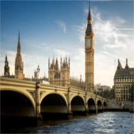
Big Ben
Monumento contruido tras el incendio de Londres, el cual afecto seriamente al Palacio de Westminster, tiene una altura de 96,3 metros y
tiene una base de 225 metros. El Big Ben es la torre más representativa de la ciudad de Londres y es poseedora de uno de los relojes mecánicos
más grandes del mundo, el cual es conocido por su fiabilidad, ya que pocas veces ha dejado de funcionar.
Aunque generalmente cuando hablamos del Big Ben nos referimos a la Torre del Reloj del edificio del Parlamento de Londres, esta denominación no
es del todo exacta, ya que el Big Ben realmente es una enorme campana de 14 toneladas que se encuentra en el interior de la torre.
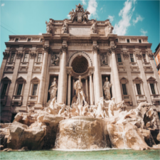
Fontana di Trevi
La Fontana di Trevi es la fuente más monumental de Roma y una de las fuentes más bonitas del mundo. No solo por su tamaño o por su diseño,
sino también por su energía, tan pronto llegas allí es capaz de inundarte con ella hasta la médula. Construida en el siglo XVIII por un hombre
casi desconocido, llamado Nicola Salvi, que sorprendió a todos con este diseño asombroso. Esta fuente tiene un mito, este mito, nacido en la pelicula "Tres
monedas en la fuente", dice que si arrojas una moneda, volverás a Roma, si arrojas dos monedas, encontrarás el amor con una atractiva italiana y si arrojas
tres monedas, te casarás con la persona que conociste.
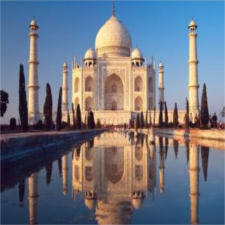
Taj Mahal
El Taj Mahal está ubicado en las cercanías de la ciudad de Agra, en el estado de Uttar Pradesh, India, y fue construido en el siglo XVII.
Se encuentra situado a orillas del río Yamuna, y fue encargado por orden del emperador musulmán Shah Jahan de la dinastía mongola. El fascinante complejo
se erigió en honor de su esposa predilecta, Arjumand Bano Begum que falleció en el parto al dar a luz a su decimocuarta hija. Se estima que su construcción
necesitó el esfuerzo de unos 20000 obreros y más de 1000 elefantes. Su arquitectura está basada en los estilos persa, islámico e indio. Forma parte de las 7
Maravillas del Mundo desde el año 2007. El Taj Mahal es eso: poesía hecha arte, un canto al amor, una obra sublime que sólo un alma enamorada sería
capaz de ofrecer al mundo.
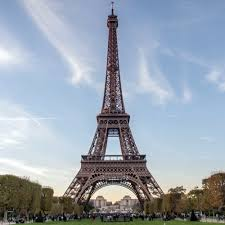
Torre Eiffel
Construida en el eje de la explanada de Champs de Mars en París por Gustave Eiffel, la Torre Eiffel es el monumento más famoso de Paris y símbolo de la capital francesa.
Es uno de los monumentos preferidos de Europa junto al Big Ben. Apodada “La dame de fer” (la dama de hierro) este emblemático monumento ostentó el titulo de la estructura hecha
por el hombre más alta del mundo durante 41 años, hasta que el edificio Chrysler fue construido en Nueva York. La Torre Eiffel es el punto más alto de Francia y a ella se puede subir,
bien en ascensor o bien subiendo los 1665 escalones de los que consta.